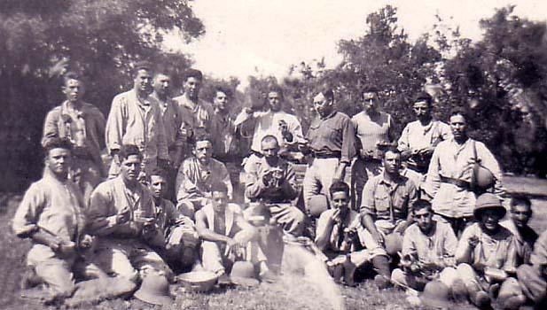

Fernand Mico
Mon histoire pieds-noirs

CHACALS EN ALGERIE ET TIGRE A VERDUN
Ce document raconte en quelques lignes l'épopée de ce Régiment glorieux, dont mon père Fernand MICO faisait partie, d'aôut 1939, à août 1940.
A 35 ans ayant laissé femme et enfants (2enfants) dans sont village d'Algérie, suite à la mobilisation générale, il part avec son Régiment le 9ème Zouaves, combattre les Allemands sur le front de l'est de la France, grâce à Dieu il s'en sort, contrairement à beaucoup de ses compagnons de combat.
Il était fière d'avoir défendu sa Patrie, son Pays, mais par la suite sa Patrie, ne lui a pas était reconnaissante en abandonnant son pays natal et en l'obligeant à le quitter.
Le 2 septembre 1939, le régiment rejoint le sud Tunisien: Sousse, Monastir, Sidi-el-Hani, pour faire face à une éventuelle menace Italienne.
Le 21 octobre, il quitte la Tunisie et rejoint la France, à Castelnaudary le 10 novembre, puis le Camp de Mailly en Champagne.
En mars 1940, il monte en ligne à Sarreguemine (Moselle) durs combats, le 14 mai, l'ennemi ayant percé à Sedan, il se replie sur l'Aisne, le 18, le régiment s'établit sur les berges de l'Ailette: Champ, Pont de Guny, Trosly-Loire.
Du 21 mai au 6 juin en soirée, au prix d'énormes pertes, les Zouaves vont tenir leurs positions, stoppant toutes attaques ennemies.
Puis ce sont des positions successives de repli, toujours en combattant, de décrochage en décrochage.
Le 7 juin, c'est Vic-sur-Ainsne et le bois de Courtieux, il se bat sur le front de l'Aisne jusqu'au 9 en soirée.
Le 10 juin, c'est Taillefontaine, puis nouveau repli sur Palesme et Crépy-en-Valois.
Le 1er Bataillon se sacrifie pour permettre au Régiment d'échapper à la capture, et de se regrouper sur la Gergogne, à Vincy-Manoeuvre, avant de rejoindre Saint-Germain-sur-Morin et le sud de la Seine.
Le 25 juin, à l'armistice, le 9éme Zouave et sur la Vienne, toujours prêt au combat.
Le 27, il sera à Rochechouart, avant de rejoindre Châteauroux le 2 juillet.
Le 7 août, il part pour Marseille où il embarque le 9 pour l'Algérie avec armes et bagages.
A sousse en Aôut 1939 avant la départ pour la France (mon père: Fernand MICO en chemise grise)